НА БЕРЁЗОВЫХ ДРОВАХ · РЯДОМ С КАЗАНЬЮ
Баня Чибис в МакаровкеВремя
выдохнуть.
Настоящий берёзовый жар на берегу ледяной речки.
Выход к реке — прямо из парной.
2 000 ₽/часОт 3 часов · до 6 гостей
+7 (966) 993-69-26д. Макаровка, ул. Березовая, д. 9аКруглосуточно · по предварительной записи
Подальше от суеты.
01 О МЕСТЕ
Тепло дерева.
Тишина вокруг.
Классическая баня на берёзовых дровах в Макаровке, которую ценят за мягкий пар, аромат дерева и неповторимый уют. Треск поленьев, запах дров и жаркая печь — всё для отдыха в своём ритме, на берегу ледяной речки.
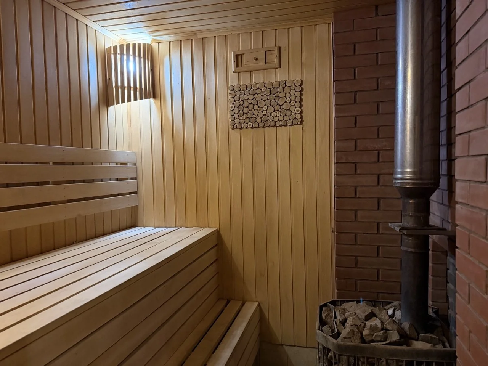
Парная на дровах
Настоящий берёзовый жар, мягкий пар и аромат дубового веника. Идеальная чистота и все условия для комфортного отдыха.
Пауза между заходами
Комната отдыха со столом и чайником. Можно посидеть, поговорить и никуда не торопиться.
Отдых на воздухе
Мангальная зона для вашей компании. Решётки предоставляем — привозите то, что любите готовить.
Из парной — к речке
Прямой выход из парной к чистой речке. Удобные и безопасные ступеньки для захода в воду — прямо от дверей бани.
02 БЕЗ ЛИШНИХ СЛОВ
Загляните внутрь.
Парная, сруб и немного природы.
Все фотографии — из нашей бани.

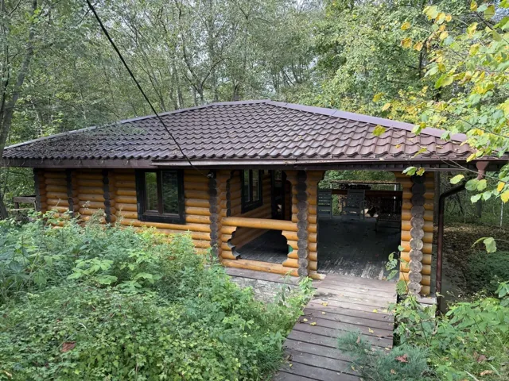
Бревенчатый сруб Парная на дровах

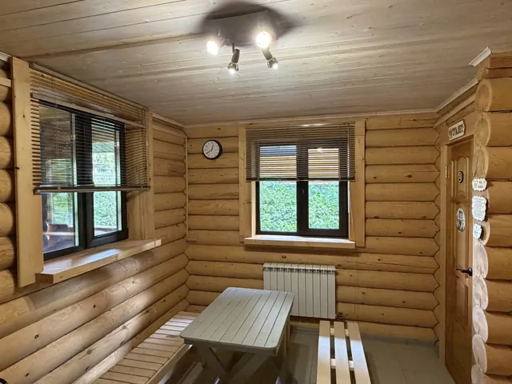
Комната отдыха
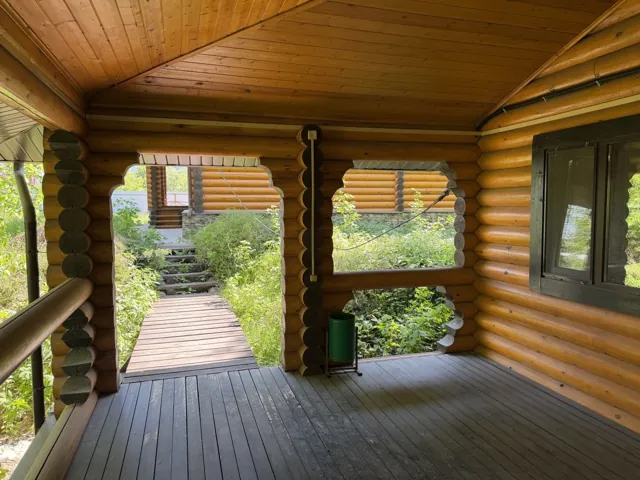
Крытая веранда
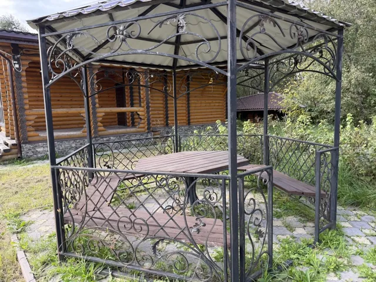
Место для посиделок
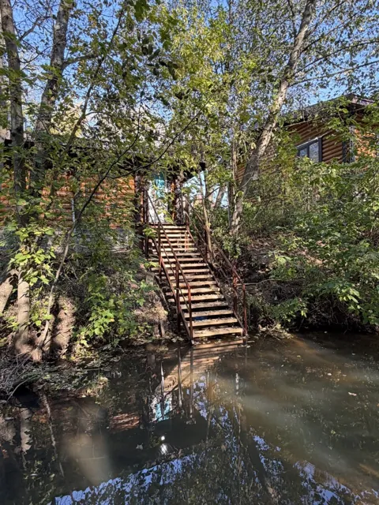
Выход к реке
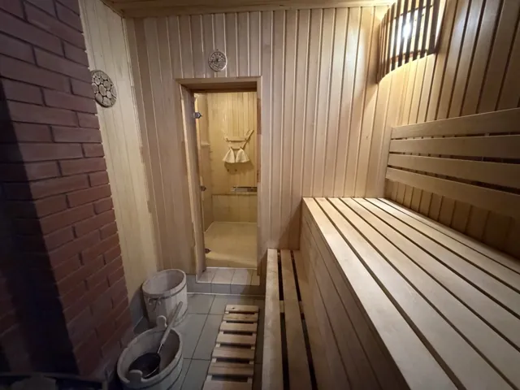
Тепло парной
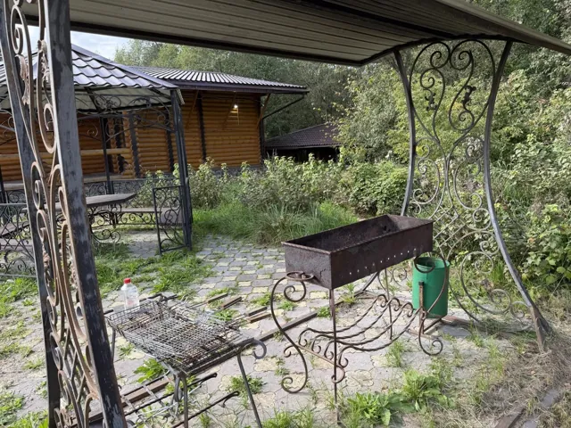
Мангальная зона
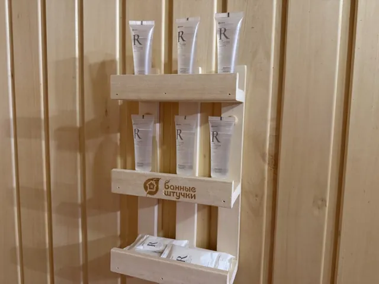
Банные принадлежности
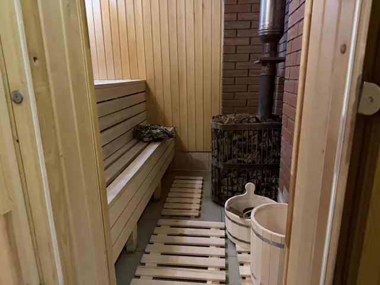
Печь и камни
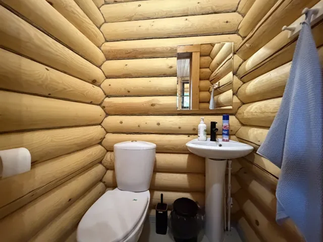
Санузел
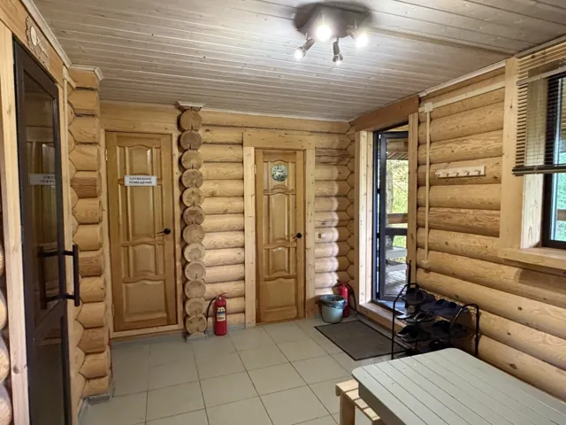
Внутри сруба
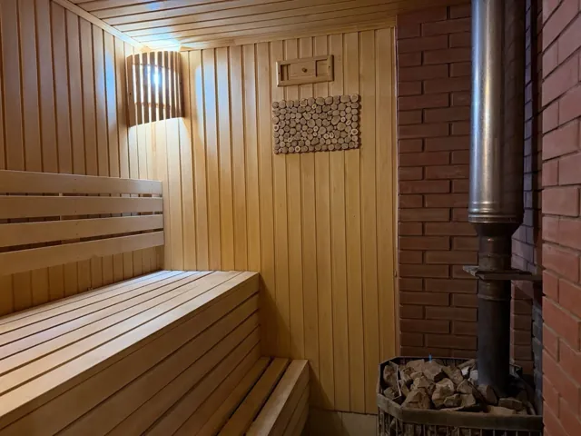
Ещё один взгляд на парную
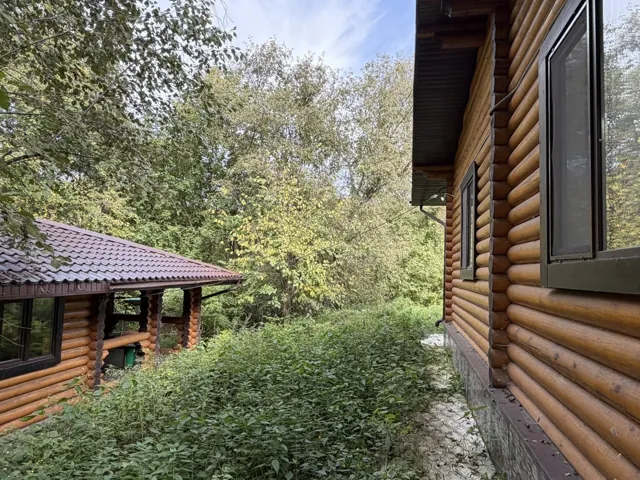
Среди деревьев
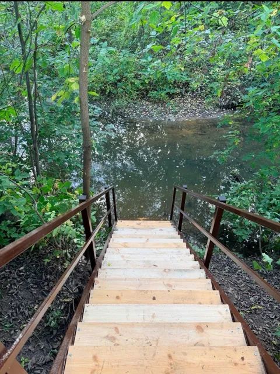
Ступеньки к воде
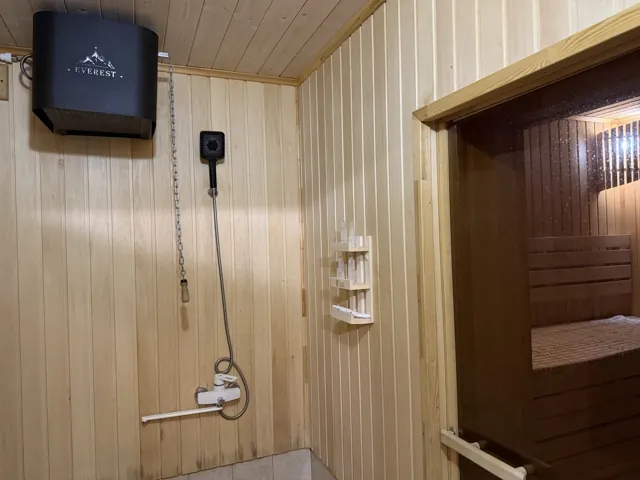
Детали бани
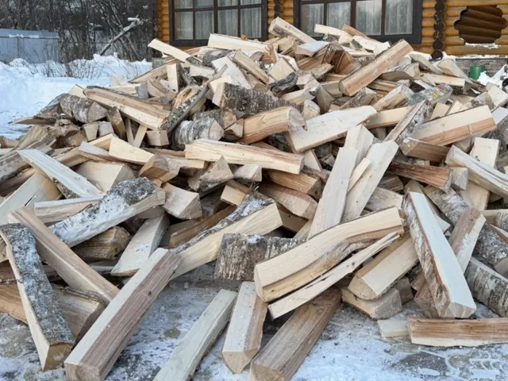
Берёзовые дрова
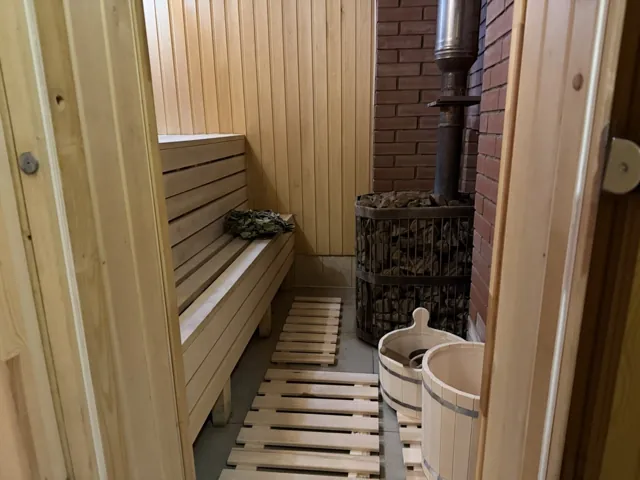
Парная и печь
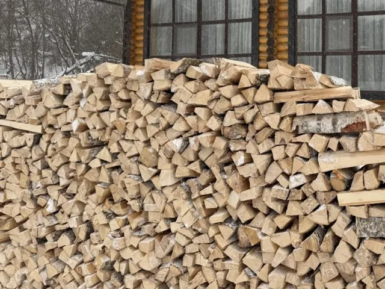
Запас дров
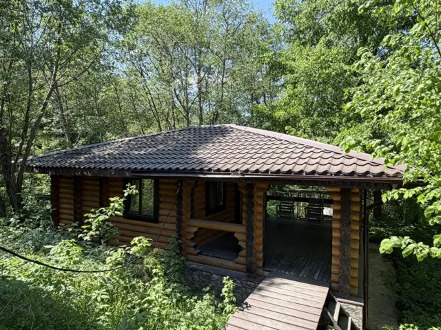
Баня среди зелениПоказано 6 из 20 фотографий
03 / ВАШ ВЕЧЕР В ЧИБИСЕ
Хороший отдых.
Понятные условия.
От 3 часов — 6 000 ₽ · баня целиком для вашей компании
Адрес и записьВ ВАШ ОТДЫХ ВХОДИТ
- Парная на берёзовых дровах
- Комната отдыха со столом и чайником
- Мангальная зона и решётки
- Прямой выход из парной к реке
Для компании до 6 человекСдаём целиком, без посторонних гостей.
Минимум 3 часаСтоимость трёх часов отдыха — 6 000 ₽.
Работаем круглосуточноБудни, выходные и праздники — по предварительной записи.
04 ПЕРЕД ПОЕЗДКОЙ
Пара слов
о главном.
Чтобы вам было проще
спланировать отдых.
Где находится баня Чибис?
По адресу: Республика Татарстан, Высокогорский район, деревня Макаровка, ул. Березовая, д. 9а. Если нужна помощь с подъездом, позвоните: +7 (966) 993-69-26.
Сколько стоит аренда бани?
Стоимость — 2 000 ₽ в час. Минимальное время заказа — 3 часа, стоимость такого посещения — 6 000 ₽. Баня сдаётся целиком для вашей компании.
На какую компанию рассчитана баня?
На компанию до 6 человек. Баня сдаётся целиком: в забронированное время здесь отдыхаете вы и ваши гости.
Что входит в стоимость?
Парная на берёзовых дровах, комната отдыха со столом и чайником, мангальная зона с решётками и прямой выход из парной к реке.
Есть ли выход к реке?
Да, из парной есть прямой выход к чистой речке. От дверей бани к воде ведут удобные и безопасные ступеньки для захода в воду.
В какое время работает баня?
Баня Чибис работает круглосуточно, каждый день, включая выходные и праздники. Посещение по предварительной записи: дату и время необходимо согласовать заранее.
Можно приехать в выходные или праздники?
Да, отдых в выходные и праздничные дни возможен. Свободное время уточняйте заранее. Для записи лучше позвонить: сообщения могут приходить с задержкой.
05 ПРИЕЗЖАЙТЕ В ГОСТИ
Чуть ближе
к природе.
Баня «Чибис» · деревня Макаровка
Республика Татарстан, Высокогорский район, деревня Макаровка, ул. Березовая, д. 9а
Работаем круглосуточно
Посещение по предварительной записи.
Дату, время и точный подъезд согласуем заранее.
Звоните: сообщения могут приходить с задержкой.
Открыть на карте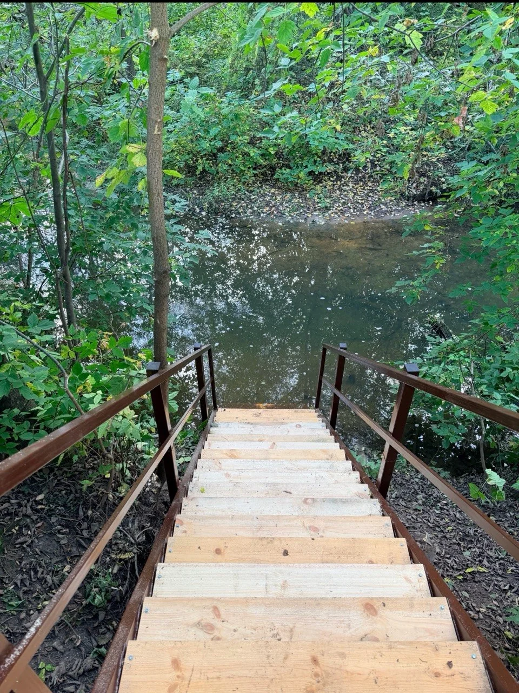
За городом —в своём ритме.
Как нас найти
Деревня Макаровка, ул. Березовая, д. 9а
Метка у дома 9а на Березовой улице. Открыть адрес в Яндекс Картах